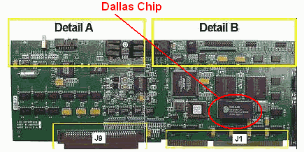

Tshoot: Electronics Module
|
Item / PCB |
Check for |
|---|---|
|
Any Card Cage PCB |
|
|
Power Driver |
|
|
Ultrasonics |
|
|
Stepper Motor Controller ( QSMC ) |
Motor motion issues.
Note: DSMC is the original/old name for QSMC (Quad Stepper Motor Controller).
|
|
Stepper Motor Driver ( SMD ) |
A single motor does not move or vibrates when commanded to move.
For "Wastevlv" (Waste Valve) and "Wastepmp" (Waste Pump) error messages and failed initialization.
|
|
CPU |
Loss of video display.
HDD controller error.
HDD boot error.
|
|
Hard or Floppy Drive |
Drive does not appear to work. (Access2, no network communication)
|
|
I/O |
If F2 is open on the I/O PCB, then the instrument may indicate that it has Rev A Fluidics when it actually has Rev B Fluidics. A resistor that sets the fluidics hardware revision to Rev B is located on the SMD PCB. The resistor is sensed from J23-40 on the SMD PCB, through a ribbon cable and the backplane to J17-B22 on the I/O PCB. An open connection may cause the system software to display Rev A hardware (Waste Valve and Waste Pump) and fail initialization.
The symptom of loosing the contents of the waste bag or substrate bottle is caused most often by the Dallas chip falling partially out of its socket on the I/O PCB. This is seen most often at initial system initialization due to shipping vibration loosening the chip. Confirm that this chip is well seated in its socket. If the loose chip problem is not present and the symptoms continue, then replace the I/O PCB. The waste bag and substrate counts are stored only in the I/O PCB. The counts are read from the I/O PCB by the User Interface at initialization while "Configuring Parameters" is displayed in the status area of the User Interface. The I/O PCB may cause the system to halt at "configuring parameters", if the MSGBACK and STATE directories are empty and the database has been reorganized.
 |
|
Backplane |
A Defective backplane PCB has been seen to cause these issues:
|